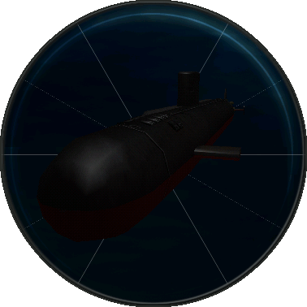

STADIMETER - The Stadimeter station is accessible only from the Periscope station by clicking the Stadimeter icon button. The stadimeter is used to manipulate a photo of a contact taken through the periscope to determine the contact's range, course and class.
PERISCOPE - The Periscope station in SCS-Dangerous Waters merges the functionality of the Periscope with that of the Stadimeter and also provides access to the Ice Thickness display. The periscope can be used to mark or photograph targets, has a built-in ESM sensor, and can operate in both normal and low-light level TV modes.
ICE THICKNESS - The 688(I) utilizes an upward looking television camera to assist in locating suitable locations for surfacing when under the ice. Suitable areas appear brighter while areas where the ice is very thick appear dark. Because the TV relies on differences in brightness it is not helpful at night. The Signal Strength Indicator uses colored lights to indicate the thickness of ice directly over the submarine. The Ice Thickness camera is also useful for navigating minefields.
SAIL BRIDGE - The Sail Bridge station is only accessible when the submarine is surfaced. The Sail Bridge provides three views: free look (360° naked-eye view), binoculars (up to 9.3X zoom in visual and LLTV modes) and shoulder mounted SAM Launcher (FIM-92 Stinger Surface to Air Missiles, Range: 4.3 nm)
TARGET MOTION ANALYSIS - At the Target Motion Analysis (TMA) Station, data from the 688(I)'s sensors are used to determine a contacts' bearing, range, course and speed. This information, called a target solution or simply a solution, is necessary to accurately target a contact with your ship's weapons.
SHIP CONTROL - 688(I)'s Ship Control features include: Trim Angle, HP Air, Towed Array, Course, High Frequency Sonar, Ventilate, Stern/Bow/Rudder, Engine, Emergency Blow Valve, Depth, Speed, MBT Vents.
RADAR - Submarine radar can be used when at periscope depth or less and moving at 8 kts or less if the sail is submerged. It should be used with caution and only when the situation mandates its use. When you use radar you communicate your presence, your bearing, your proximity and who you are if the other platform is equipped with EW or ESM equipment.
RADIO & ESM - In SCS-Dangerous Waters the Radio Room and the ESM (Electronic Support Measures) stations are combined. The radio is used to receive intelligence and tasking updates while underway. The ESM console allows you to detect and classify contacts when at periscope depth.
FIRE CONTROL TARGET DISPLAY - From the stations of the Fire Control Suite, weapons are selected, contacts are targeted, weapons are launched and countermeasures are deployed. The 688(I) Fire Control Suite consists of three stations: the Target Display, the Launch Panel and the Weapons Inventory. The Target Display contains the Fire Control map, the Target Selection list, the Tube Selection Panel and the Map Control Panel.
SONAR BROADBAND - The Broadband Sonar Station displays input from the spherical bow and towed arrays. These inputs are used to detect and track submarines and surface ships. Here trackers can be assigned to contacts and they are given an alphanumeric Contact Designation or ID.
The 688(I) uses dual waterfall displays to track sonar information. In the waterfall display, sonar information "cascades" down over time giving a sense of the contact's movement. Contacts appear as green lines in the waterfall. A faint green line represents a weak contact while a strong contact appears as a brighter, thicker line. Both waterfall displays show broadband sonar data, usually one is set on Short Time Average (updated once per second) and the other on Intermediate or Long.
SONAR NARROWBAND - Each ship class has a unique sound frequency signature. The Narrowband function is used to classify sonar contacts by comparing the frequency signature of the selected contact against a database of known frequency signatures. The ship's computer narrows your search by presenting only those signatures that have similarities to the signatures of the selected contact.
SONAR DEMON - DEMON is an acronym for Demodulated Noise. The DEMON function is used primarily to determine a contact's speed. This is important information when establishing an accurate firing solution.
FIRE CONTROL LAUNCH PANEL - From the Launch Panel weapons selected in the Target Display are launched. Prior to launching a weapon the tube must be flooded, the pressure equalized and the muzzle door opened. The weapon can then be fired.
SONAR SSP - The Sound Speed Profile (SSP) Station displays the speed at which sound is transmitted at various water temperatures and depths in the area. Ocean water typically forms distinct layers of density that can profoundly affect sonar transmissions. Warmer, less dense water forms the upper surface duct - below this, temperatures fall off sharply and density increases.
The effect of this process is sound generated in one layer doesn't tend to transmit easily to the other layer, and vice versa. At the beginning of each mission, always check the depth at which the surface duct separates from the lower thermal.
SONAR ACTIVE INTERCEPT - The Active Intercept function alerts you to the presence of active sonar transmissions from another ship, sub, dipping sonar or sonobuoy in the area. It provides the bearing of the transmitting entity as well as the frequency between pings, the age of the last signal and the strength of the signal. Knowing the signal strength can assist you in determining the relative proximity of the active sonar source.
SONAR ACTIVE - Active sonar should be used only when absolutely necessary since it provides the enemy with a wealth of information. SCS-Dangerous Waters has both medium and high frequency active sonar for the 688(I) class submarines.
WEAPON INVENTORY - The Weapon Inventory Station simply displays the current type and number of weapons on board your sub. No interaction is possible. The total of available weapons is updated as weapons and countermeasures are dispensed.,
The 688(I) class sub carries the following weapon systems: Mk 48 Torpedo ADCAP, Tomahawk Land Attack Missile (TLAM), Tomahawk Antiship Missile (TASM), Harpoon, Mk 67 SLMM Mines, Passive and Active Decoys, Unmanned Underwater Vehicles (UUV).
|
|
 |
| |
|
 |

|
| |

IMPROVED LOS ANGELES CLASS (SSN 751-773)
U.S.A.
NUCLEAR-POWERED ATTACK SUBMARINES [SSN]
Crew Stations:
(click the station panel images
below for a full screen view)
Platform
Information :
The “backbone of the fleet”,
the 688(I) class sub is one of the quietest submarines in operation
today and is armed with state-of-the-art weaponry including Tomahawk
land attack missiles and Mk 48 Adcap torpedoes. Its hardened sail
and bow planes make it available for missions under the ice. 688(I)
class subs are available in sufficient numbers to ensure availability
for missions around the world.
Displacement:
SSN 751-770: 6,300 tons surf./7,147 tons sub.; SSN 771-773:
6,330 tons surf./7,177 tons sub.
Speed: 30+ kts. (sub.)
Dimensions: 109.73 x 10.06 x 9.75
TPK: 7
ARMAMENT:
12 Mk 36 vertical tubes for Tomahawk; 4/533-mm TT Mk 67 (amidships)
for Tomahawk missiles, Mk 48 and Mk 48 ADCAP torpedoes, etc.
(22 reloads + 2 additional emergency); SSN 756 and later: mining
capability
ELECTRONICS:
Radar: BPS-16(V) ARPA nav./surf.
search
Sonar: BQQ-10 suite: spherical
bow active/passive array; TB-29(A) thin-line towed passive array;
TB-16 fat-line towed array; HF active bow and sail mine avoidance;
BQG-5A WAA lightweight wide-aperture passive flank array; WLY-1
acoustic intercept; Advanced Deployable System offboard sensor
on UAV; BQN-17 secure echo sounder; ACOMMS covert underwater
comms
EW: BLQ-10(V) intercept; 1 76.2-mm
reloadable decoy launcher; 14 152-mm external decoy launchers
MOTOR:
G.E. S6G pressurized-water reactor, 2 sets geared steam turbines;
1/7-bladed prop (pump-jet in SSN 773 and several others); 35,000
shp
DEPTH:
Maximum operating depth is 450 m (1476 ft)
|
|
 |
 |
 |
|
| |
|
Any questions or comments regarding
this website.
Contact: webmaster@sonalystscombatsims.com
|